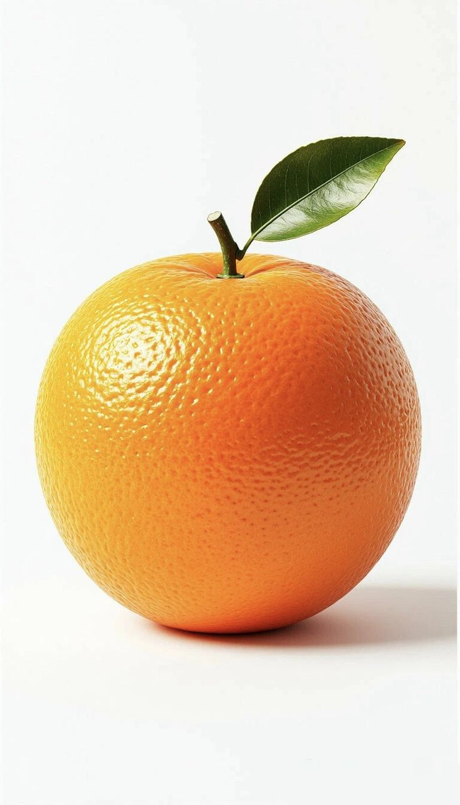

Explore some of the delicious fruits found in different parts of the world. Click through our pages to learn more about them.
Home Our Fruit Fruit Facts Fruit Recipes Contact Us
Apples are popular fruits that come in differet colors such red, green, and yellow. They are usually sweet and crunchy.

Bananas are soft, sweet fruits witha yellow peel. They are easy to carry and make a conenient snack.

Pineaaples have a rough outside and a swet, juicy inside. They are popular in fruit salads and juices.

Dragon fruit has a bright outer skin and a soft inside with tiny balck seeds. It is interresting tropical fruit.
Stawberries are small red fruits with tiny seeds on the outside. They are often used in desserts and smoothies.

Oranges have a bright color and a juicy inside. They are popular for eating and making fresh juice.
| Fruit | Colour | Taste | Shape | Apple | Red | Sweet | Round |
|---|---|---|---|
| Banana | Yellow | Sweet | Long | Orange | Orange | Sweet | Round |
| Pineapple | Brown and Yellow | Sweet | Oval | Lime | Green | Sour | Round |
©2026 Fruit World. All Rights Reserved.